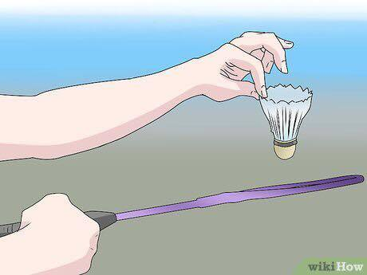

TrickShot
Tutorial
How to Play Badminton
Who wouldn't want to play the world's fastest racquet game? Badminton can be played with two or four players and in which the object of the game is to score points by successfully hitting the shuttlecock over the net. Though the game has some similarities to tennis, the rules of badminton are distinct and important to know before you take a swing at your first game. If you want to be a badminton master or just impress that cute girl at the park, then let's get started.
Part One of Three
1.Understand the object of the game. Badminton, like tennis, is a racket sport that is played by either two players or two teams of two players each. The object is for you or your team to get to 21 points first. You score a point whenever you successfully serve the shuttlecock and your opposing team commits a fault, which means that the team fails to appropriately return the shuttlecock.[1] - To win each game, you must earn 21 points first, and win by two in the process. So, if both teams have a score of 20, one team must win by 22-20, and so on. - If you and your opponent cannot win by 2 and keep going until the score is 29-all, then the first team to score 30 points wins. - The first team to win two games wins the match. If the score is 1-1 in games, you must play a third deciding game.
2.Get familiar with the badminton court. The badminton court is 44 feet (13.4 m) long by 22 feet (6.7 m) wide. If you're playing singles, you play on the part that is 44 feet (13.4 m) long but only 20 feet (6.1 m) wide. The net should be positioned halfway across the court, at the 22 foot (6.7 m) mark, 5 feet (1.5 m) above the ground. When you're playing doubles, the extra 15 feet (1.5 m) on the left and right side of the court (the doubles sidelines) are considered fair game for serving and returning. Here's what else you need to know:[2][3] - Each side of the court has a right and left service court. The server of one team must serve from one service court to the service court diagonal from it. - When serving in singles, you can serve to the opponent's diagonal service box and the back singles line on that side of the course, but not to the wider doubles sideline. - When serving in doubles, the player can serve to the opposing team's diagonal service box, including the doubles sideline, but not the singles long service line. - So, for singles service, the receiving court is longer and narrow, and in doubles service, the court is wide and short. - After the shuttlecock is successfully served, each team's entire court becomes fair game. The shuttlecock just has to stay within the bounds of the doubles or singles court.

3.Understand the basics of play. Here's what you need to know before you start your badminton game, beyond the court information and the scoring rules:[4] - Toss a coin or have another contest to decide which team will be serving first and which side they will play on. - The first serve of a badminton game comes from the right half of the court to the court that is diagonally opposite that court. For the rest of the game, if you have an even number of points serve from the right, if you have an odd number of points, serve from the left. - If the serving side commits a fault, then the receiving side gets a point and the serve shifts to that side. If the serving team serves and the receiving side commits a fault, then the serving team moves from one service court to the other and continues to serve. There is a point scored after every serve (unlike in volleyball, for example). - In doubles, each team only has one "service." So, if one player on one team serves and faults, then the shuttle goes to a player on the other team, and so on. - When a receiving team wins a point and gets the serve, the team does not switch sides but serves from where they are standing. If they win the first service point, then the players switch positions from right to left. - After each game, opponents change ends of the court, and the side that won the previous game gets to serve at the start of the next game.

4.Understand how a player can get a fault. There are several reasons that a team or player can earn a fault. Here they are: - If the serving team fails to serve the shuttlecock over the net. In badminton, you only get one try on each serve. The only exception is if your team gets a let, which is when the shuttlecock hits the net and falls over into the opponent's court. In that case, you get another try. - If you hit the shuttlecock into or under the net at any point in the game. - If the shuttlecock hits you. - If you hit the shuttlecock out of bounds. - If you hit the shuttlecock on the ground on your side of the court. - If the server fails to serve the shuttlecock into the correct opposing court. - For more advanced players, you can also consider it a fault when the server hits the shuttlecock at a point that is higher than his waist, or when he holds the racket head higher than - Learn the basic ways to strike the shuttlecock. The standard badminton racket is 26 inches (66.0 cm) long and weights anywhere from 4.5-5.5 ounces. Most of them are made with metal and nylon, and you'll need to generate enough energy to effectively strike the shuttlecock with this light racket. The main strokes are the forehand and the backhand (as in tennis) and you'll need a light, quick wrist to effectively strike the shuttle. Here's what you need to know about striking the shuttlecock:[6] - It's all about the footwork. See the shuttle and use several small steps to position yourself so that you can easily strike it instead of having to stretch too much. - You'll need to practice the backswing, the forward swing and hit, and the follow through in order to hit the shuttle effectively. You should hit the shuttle's round center, not the feathers of the shuttle. - Perfect your clear shot. This is the most common shot and the goal is to strike the shuttle in a way that moves your opponent away from the net, which gives you time to set up your next shot. - Practice your drop shot. To hit this shot effectively, you'll have to hit a slow, gentle shot that makes the shuttle fall just over the net, making it hard to reach for your opponent, no matter how fast he runs. - Smash the shuttle. This is a powerful shot that you use to hit a shuttle that is above the height of the net. You'll need to raise you're racket behind your back, as if you were going to scratch it, anticipate the shuttle coming your way, and then hit it hard, diagonally down, as if you were smashing it over a fence. - Drive the shuttle. This can be a forehand or a backhand shot that makes the shuttle move parallel to the ground, just barely passing over the net, making it hard for your opponent to anticipate or return your shot.
Part Two of Three
1.Master the grip. The grip is how you hold your racket and it will affect every stroke that you hit. You have two basic grips in the game, one for the forehand and one for the backhand. Here's what you need to know:[7] - The forehand grip. Hold the racket with your non-playing hand, pointing the handle toward you with your racket face perpendicular to the floor. Put your hand on the handle as if you are shaking hands with it. Look for a V shape between your thumb and index finger. Rest the handle loosely in your fingers for more flexibility. Shorten the grip and place it closer to the shaft for more control of the racket when you're hitting the shuttle from forecourt and midcourt. - The backhand grip. Hold the racket as if you were holding a forehand grip. Then, turn it counter-clockwise, so that the V shape you've formed moves to the left. Put your thumb against the back bevel of the handle for more leverage and power, resting the racket loosely in your fingers.

2.Master the high and low serve. There are many ways to hit a badminton serve, from the high serve to the backhand serve. Here are a few serves you will need to know:[8] - The high serve. This is a great serve for moving your opponent back during singles play; it's a little trickier for doubles. You have to use an underhanded forehand for this serve. Relax, bend your knees, standing 2–3 feet (0.6–0.9 m) behind the short service line. Lead with your non-racket leg, placing your racket leg behind it. Move your racket back almost to your shoulder, then swing it forward. Hold the shuttle by the feathers and drop it slightly in front of you. Hit the shuttle with the flat face of your racket and follow through until your racket reaches all the way to the non-racket side of your head. - The low serve. This serve is more commonly used during doubles. You can use the forehand or the backhand for this motion. - For the forehand serve, stand 2–3 feet (0.6–0.9 m) behind the service line, bring your racket back to your waist level and start swinging forward. Hold the shuttle by the feathers and bring it close to meet the racket instead of dropping it. Hit the shuttle at a higher point, but still below your waist, and push it with the racket face, trying to make it just skim the tape of the net. - For the backhand serve, just lead with your racket leg and your non-racket leg behind, with your feet pointing toward your opponent. Use a short backswing and then bring the racket forward, holding the shuttle at the tip of the feathers in front of waist level. Then, push the shuttle with the racket face and try to make it skim the tape of the net. Shorten your grip for more control.
3.Master the flick and drive serve.Here's what you need to know: - The flick serve. Use this for a quick serve but do so sparingly. Use a forehand or a backhand, acting like you're going to push the shuttle in a typical low serve, but instead, use your wrist to quickly flick the shuttle over. - The drive serve. This is an attacking serve perfect for singles or doubles. This will make the shuttle travel at a flatter angle and at a faster pace. Use an underarm forehand, standing a bit further from the service line, leading with your non-racket leg, placing your racket a bit below waist level, bringing it back and parallel to your waist. Swing the racket forward and follow through as you drop the shuttle slightly sideways to your body, hitting it and letting it pass the net at a flatter angle.
4.Master the forehand. Once you see that the shuttle is coming low and in front of you, you'll need to hit that forehand to beat your opponent. Here's what you have to do: - Drop the racket head down and behind you. Make sure that the racket extends out behind you. - Keep your knees bent and ready to move. - Move forward with your racket foot. - Keep your arm nearly straight as you swing the racket, snapping your wrist at the last possible second before you hit the shuttle. - Have an open racket face and swing the racket upward to generate momentum. Follow through until your racket hits near your opposing shoulder.
5.Master the backhand. To hit a backhand, you have to wait for the shuttle to approach your backhand side. Here's what you do: - Move on your left foot and step your right foot around in front of your body (if you are right-handed and your backhand is on your left side, that is), making sure that your right shoulder faces the net. - Bend your right elbow and draw your right hand across your body to get ready to swing the racket, moving your weight to your back left foot, keeping your right foot loose and limber. - Shift your weight to your forward foot, straightening your elbow as you swing the racket forward until the racket face connects with the shuttle, following through to move the racket forward past your right shoulder.
6.Learn to slice your shots.The slice can help slow down the shuttle or change its direction. This is a more advanced skill that will make it hard for your opponent to know where you're going or to be able to return the shuttle. Here's what you can do:[10] - Slice your net shots. Start the forward motion as usual and then move the racket inward as you slice it perpendicular to the center of the birdie, thus slicing the shuttle and making it spin cross court instead of moving forward, as your opponent would expect it to do. - Slice your drop shots. Just slice the racket, moving it perpendicular to the center of the shuttle when it's in the air. This will slow down the shuttle, making it quickly fall on the opponent's side near the net.
7.Learn to hit an overhead shot.Also known as a smash shot, this shot allows you to use your power and to hit the shuttle at the top of its arc. To do this, aim your free hand up near the shuttle, and then swing the racket over your head with your racket hand, smashing the center of the birdie before it falls, directing it down in your opponent's court. - Aiming is important here try to aim the shuttle in a place that will be hard for your opponent to reach.
Part Three of Three:
1.Make sure to always return to "the stance of readiness" after each shot.After you return their shot, return to the middle of the court, so if they hit it to your left or right, you have more time to react and run to their shot, and return it back. Stay on your toes, and slightly move left and right ,so your energy and momentum is still active and you can be ready to run for the next move. - This stance means that your feet should be even with your shoulders and parallel and your toes should be pointed toward the net. - Keep your knees bent slightly and your racket in your hand with your arm across the front of your body. - Don't stand as if you were just normally standing up, or your body will be far too stiff to move well.
2.Get ready to move anywhere any time. Be prepared to run up to the net, run cross court, back up all the way to the back service line, or to reach the shuttle from any position. The element of surprise is important here, too, so watch out for your opponent's tricks.
3.Go for the overhead as often as you can. The overhead smash is the most powerful shot in the game because it allows you to hit the shuttle as hard and fast as you can, making it as difficult as possible for your opponent to return your shot. Look for opportunities to hit this shot when the shuttle is being returned high in the air.
4.Keep your opponents running around. Don't hit the shuttle right back to your opponent every time, or you'll just be making it easier for him or her to hit the shuttle right back. Your goal should be to move your opponent or opponents up and down the court or back and forth across the court so they get winded and tired and don't have the opportunity to properly return the shuttle.
5.Have a method to your madness. Don't just aim to hit the shuttle back and hope that your opponent messes up; have an idea of where you're going to hit it, how you're going to hit it, and why you're going to hit it a certain way. If you just blindly swing at the shuttle, you won't get very.
6.Mix it up. Though always aiming for the overhead is nice, or hitting mostly forehands cross-court because that's your best shot is a good idea, if you do the same thing every time, your opponents will begin to catch on pretty fast. It's important to keep the element of surprise going, so your opponents are likely to be caught off guard and won't quite ever know what to expect when they play against you. - This includes where you serve, which shots you prefer, and where you tend to hit.
7.Exploit your opponent's weaknesses. If you want to win, then you have to make your opponent play your game and make him as uncomfortable as possible. If your opponent has a weak backhand (as most beginners tend to have), hit the shuttle repeatedly toward his backhand. If he's slow on his feet, move him around. If he loves to play near the net, hit your shots long and hard. If your opponent loves the smash shot, don't hit the shuttle in the air. Be attuned to your opponent's strengths and weaknesses so you can win as easily as possible. - It's important to observe your opponent closely. Whether you're starting a game or just rallying for fun, be on the lookout for your opponent's strengths and weaknesses as early as possible.